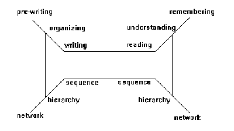

Hypermedia – Writing Model
4.2 Writing Model
Writing is constrained by goal and audience. The author is guided by a goal but constrained by what the audience is prepared to accept. Different people approach writing in different ways. Some are good at making an outline first and then brainstroming. Some do the opposite. An expert author would always keep the reading model in mind so that the writing clearly reaches the target audience.
Writing involves the following three phases : exploring, organizing, and encoding [Rada, 1991]. In the Cognitive Framework for Written Communication (see Figure 1.2), Smith et al. call these three phases: prewriting, organizing, and writing [Smith et al., 1987].

Figure 1.2: Cognitive Framework for Written Communication [Smith et al., 1987]
Exploring or pre-writing is the process of brainstorming and taking unstructured notes. The writer retrieves potential content from long-term memory or external sources, considers possible relations among ideas, groups related ideas and constructs small hierarchical structures. Thus, the product of exploration is a network or directed graph of ideas.
Organizing is the process of putting these notes or ideas in order, in the form of an outline or a hierarchy. This process involves abstract construction that involves perceiving subordinate/ superordinate relations, comparing abstractions, sequencing, proportion, and balance. Thus, the product of organization is a hierarchy of related concepts.
Encoding or writing is the final phase of completing the document. The primary task is translating the abstractions of content and the relations of a hierarchical structure into a sequence of words, sentences, paragraphs, sections, chapters, and illustrations. The structure of the encoded text is linear and represents a path through the hierarchy.
It is interesting to note that reading employs processes in the reverse order. That is, a linear sequence of words is transformed into a hierarchy which is later integrated into a network in long-term memory [Smith et al., 1987].
The writing model can be extended by considering unstructured and structured representation at each phase. Whereas an unstructured item is isolated, a structured item shows coherence. Exploring can be split into unstructured brainstorming followed by structured note-taking. Organizing can be classified as unstructured argumentation where relationships are established between ideas and structured organization of notes where notes are grouped together to make coherent sense. Encoding has an unstructured phase of linear planning which involves viewing groups of notes as sequences and a structured phase of drafting and revising in order to produce a final document (which is a linear sequence of notes).
Just as the reader of a linear document constructs a local and global mental representation of the document, the author of a linear document uses cues both at the local and at the global levels, dividing the document into chapters, sections, paragraphs, sentences, words etc. This facilitates comprehension and navigation [Thuring et al., 1991].
Thus, both reading and writing processes emphasize a lot on the non-linear nature of thinking, a natural process in human beings. Human cognition is essentially organized as a semantic network in which concepts are linked together by associations. Hypertext systems try to exploit this basic nature of cognition.